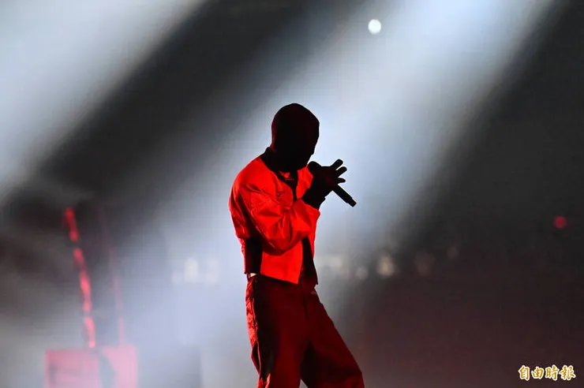
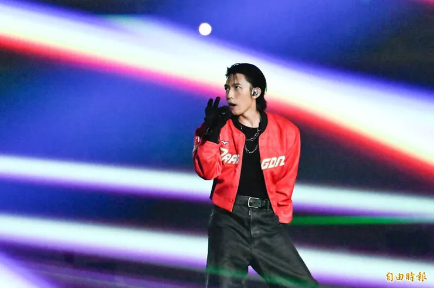
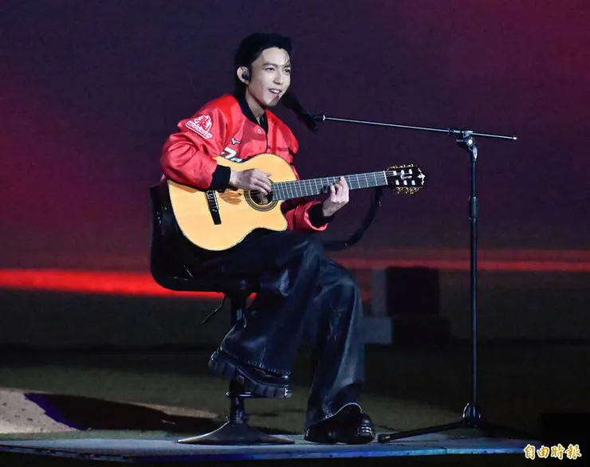

2025年是鼠姊姊大巨蛋初體驗 2026年換龍弟弟初體驗
去年，大巨蛋舉辦龍象大戰時，雞爸爸很想帶全家一起來，但那時候龍弟弟還太小，只能留在家裡。今年，這個願望終於實現了。
不過，比起比賽，雞爸爸最擔心的其實是龍弟弟的電量。
因為一早他就跟著阿姨和外婆去親子餐廳玩，又逛了百貨公司，原本以為晚上進大巨蛋會開始鬧，沒想到完全猜錯，坐車時就充完電的他一進場，就跟著燈光和音樂搖擺，揮著加油棒，玩得比誰都開心，去年還在保姆家喝奶的他，今年已經成了小小龍迷。
今年戰績出色已經奪得上半季冠軍的味全龍也沒有讓大家失望。
天哥炸裂第九轟 梅賽鍶一夫當關 兩小時就打完七局
四局下劉俊緯適時安打先馳得點，天哥五局追加全壘打，但全場最緊張的還是八局上。
梅賽鍶前七局只用了七十球，第八局卻一開局就被連打三支安打，瞬間形成滿壘危機。
旁邊一位女球迷忍不住說：「換下去了啦！」
沒想到，坐在前面、穿著兄弟球衣的小女生立刻回頭，很認真地回答：
「他才投七十球，不會這麼快換下去啦！」
女球迷只好笑著說：「好好好，我只說有可能。」小女生的爸爸也回頭說不好意思。
雖然她穿著兄弟球衣，雞爸爸心裡想著：她是真的理解棒球，不是只支持哪一隊。
果然，投手教練老納叫了一次暫停後，梅賽斯重新找回節奏，只被高飛犧牲打失掉一分，接著製造雙殺，化解全場最大的危機。終場味全龍以 4：1 擊敗中信兄弟，梅賽斯也拿下單場 MVP。
比賽結束後 另一段青春回憶也登場了
林宥嘉。
從《超級星光大道》開始，雞爸爸和鼠媽媽一路聽著他的歌，從交往、結婚，到現在帶著兩個孩子一起坐在大巨蛋聽演唱會，熟悉的歌聲，好像把青春重新播放了一遍。自然醒開場、兜圈的吉他、最後一首鬼屋，林宥嘉甚至戴著頭套演唱，全場都充滿驚喜。



嵌入內容：https://www.youtube-nocookie.com/embed/Uu7GTKKUC1E
原本以為，今天就要這樣圓滿結束了，因為原本以為林宥嘉是後面表演的。
因為鼠姐姐說對林宥嘉還好，所以韓國小哥哥NCTWISH開始表演後，
雞爸爸問鼠姊姊：「這個韓國小葛格團體的表演好看嗎？妳想看嗎？」
鼠姊姊回答得很乾脆：「不喜歡。」
剛好鼠媽媽也要帶龍弟弟去換尿布，我們便決定趁人潮還沒散，一起離開。
結果雞爸爸最擔心的斷電時刻 是發生在鼠姊姊身上
沒想到，才走沒多久，鼠姊姊突然哭了。
她一邊掉眼淚，一邊說：「我只是說不喜歡……可是我還是想看完。」
於是，全家又折返回座位。
聽完一首歌後，她又因為捨不得結束而哭了起來。就在手忙腳亂之間，外婆送給她的兔兔收納盒「啪」的一聲掉到了地上。
上蓋、下蓋彈開，裡面的三隻小兔兔瞬間滾進昏暗的觀眾席。
偏偏就在這個時候，龍弟弟的尿布也撐不住了。
鼠媽媽只好趕緊帶著龍弟弟去換尿布，鼠姊姊也哭著說要跟媽媽一起去。
最後，只剩雞爸爸一個人蹲在昏暗的觀眾席，一邊找盒子，一邊找小兔兔。
幸好，旁邊幾位熱心球迷也一起低頭幫忙，打開手機燈光，在座位底下一起尋找。
最後，上盒找到了，下盒也找到了。
只是原本五隻小兔兔，最後只找回了兩隻。
雞爸爸又找了一會兒，還是找不到剩下的兩隻，它們就留在了那個熱鬧的夏夜。
回家的路上，鼠姊姊還是有點難過，雞爸爸停下來買了一支檸檬霜淇淋給她。
果然，吃了幾口之後，眼淚慢慢收了起來。沒想到，她卻又一本正經地說：
「可是……我不喜歡這個口味。」
雞爸爸忍不住苦笑，
這時原本一直在旁邊吵著要吃冰的龍弟弟，
立刻開心地接收了姐姐不喜歡的那支霜淇淋，吃得心滿意足。
回頭想想，這天真的很像養孩子的縮影，開心、傷心、和好，和許多小插曲。
鼠媽媽說，上次跟鼠姐姐看球是輸球，這次味全龍主場贏球的感覺還不錯，
有陪伴青春的林宥嘉，有陌生球迷幫忙撿玩具，也有孩子捨不得結束的眼淚。
還有留在大巨蛋的小兔兔，和最後進了龍弟弟肚子裡的檸檬霜淇淋。
相信很快，孩子們就不會記得今天的比分，也不會記得林宥嘉唱了哪些歌。
但就是這一年，2026年的夏天，是全家第一次一起走進大巨蛋。
那些小插曲的片段，才是雞爸爸和鼠媽媽夏夜最珍貴、也最值得珍藏的回憶。